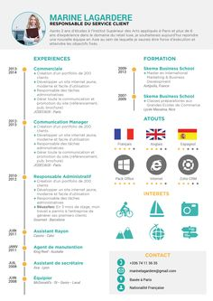

Mon CV en Responsive Web Design |
Le but de ce TP est de faire votre CV en utilisant les
principes du Responsive Web Design
Exercice 1 : Mon super CV
On souhaite faire un CV ressemblant à cette image que vous
personaliserez avec vos propres données. On ne vous demande pas
exactement le même rendu mais de vous approchez le plus possible de ce
rendu.
- Utilisez le tag meta viewport pour ne pas avoir de barre horizontale.
- Pour votre CV, une grille à 12 cases n'est pas nécessaire donc
définissez les règles CSS pour une grille à 6 cases.
Note : une grille à 6 cases est une grille à 12 cases dont on prend une case sur deux.
Vérifiez que votre CSS fonctionne en créant une grille dont- la première ligne contient une case de 1 colonne et une case de 5 colonnes ;
- la seconde ligne contient deux cases de 3 colonnes chacune.
- Modifiez la première case de la première ligne pour mettre
votre photo.
Note : Vous pouvez vous prendre en photo avec un smartphone ou la webcam de votre poste. - Ajoutez, dans la deuxième case de la première ligne, un texte
avec votre nom, votre statut d'étudiant ainsi qu'un cours texte vous
décrivant.
Faites en sorte que la taille de votre nom (la taille de la fonte utilisée) s'adapte à la largeur de la case qui le contient et que le texte soit en gras. - Faites en sorte que la couleur de fond de la première ligne soit gris (comme sur l'image ci-dessus).
- Ajoutez vos expériences dans la première case de la seconde
ligne. Le titre « Expérience » doit aussi avoir sa taille qui s'adapte à
la largeur de la zone d'affichage.
Ajoutez votre formation (collèges, lycée) dans la seconde case de la seconde ligne.
De même que pour le titre « Expérience », le titre « Formation » doit aussi avoir sa taille qui s'adapte à la largeur de la zone d'affichage. - Faites en sorte que sur votre smartphone, votre CV s'affiche sur
une seule colonne en utilisant le système de media
query.
De plus, le texte en dessous de votre nom ne devra pas être en gras si l'affichage est sur une colonne.
Attention à bien respecter l'approche "mobile first" ! - Faites en sorte que votre photo prenne toute la largeur de la case qui la contient (au padding près).
- Ajoutez des petits drapeaux pour les langues que vous parlez ;
si vous en avez moins de trois, ajoutez le klingon.
Note : cette partie doit aussi être une grille d'une ligne sur lequel vous placer les 3 drapeaux. En terme de CSS, vous pouvez réutiliser le même système de grille que la grille qui vous sert à décrire votre CV.
Note 2 : si vous avez bien fait les choses, sur smartphone, les drapeaux devraient aussi s'afficher un par ligne. - Faites en sorte que, lors de l'affichage en mode smartphone, les drapeaux ne fassent que la moitié de la largeur de l'écran.
- Personnalisez votre CV en ajoutant ce que vous voulez.
{kind=link}